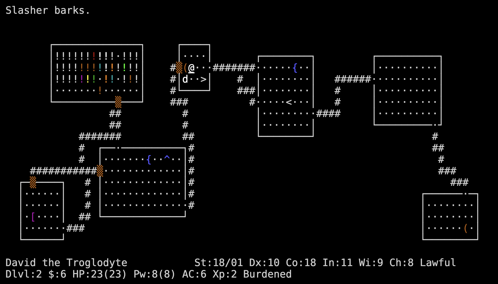
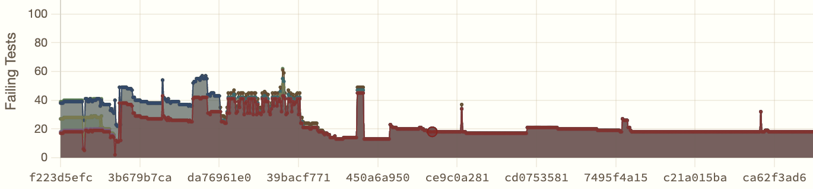
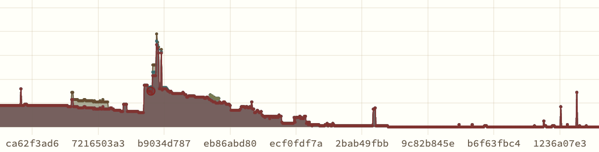
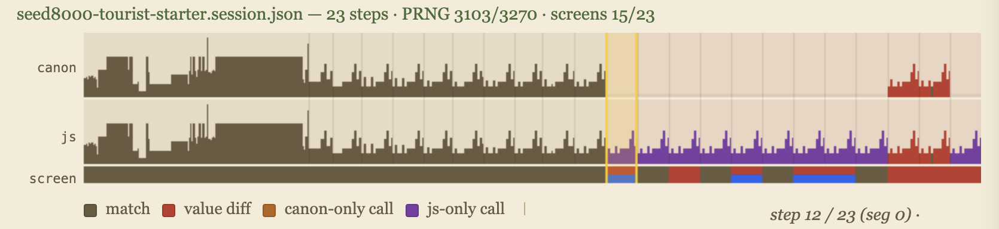
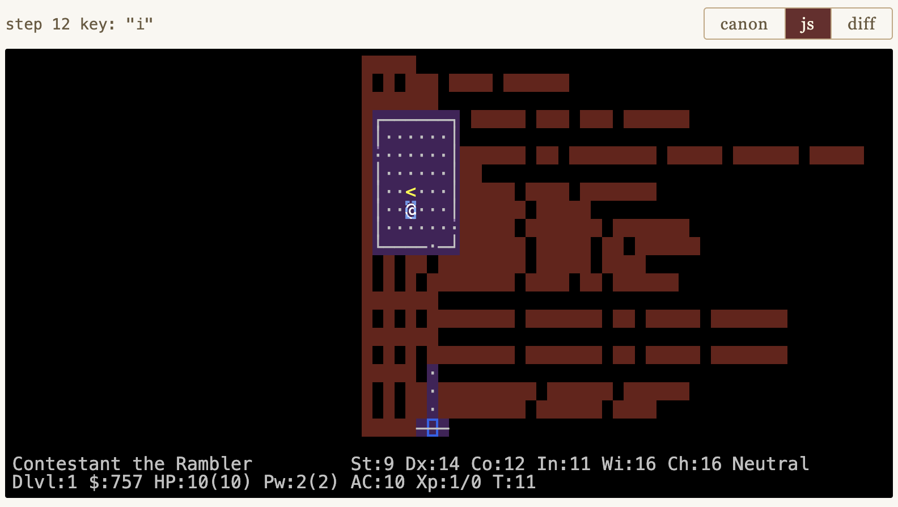
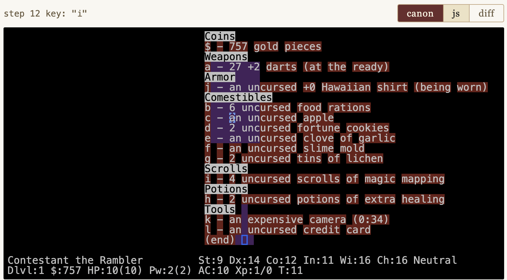

This week NetHack 5.0 was released, the newest major version of a 46-year-old open-source roguelike game, 442,901 lines of C and Lua that have accumulated layers of intricate and ingenious gameplay rules.
The contest is to port it to simple, readable JavaScript so that the game can run in the browser while playing bit-exactly like the original. Same screen at every keystroke.

You can use any approach: LLM agents, hand-coded JavaScript, a C-to-JS transpiler, or any hybrid. The contest is linked from mazesofmenace.ai, and the leaderboard is live. Phase 1 freezes on Sunday November 29, 2026. Then there is a Phase 2 sprint in December: an updated goal for your port is revealed, and your score is your performance against the new target divided by a penalty proportional to how much you changed your code to chase it. Methods with maintainable code win; cryptic hard-to-maintain ports that overfit to Phase 1 get crushed.
We start you off with a contest skeleton that implements a bit of the game in JavaScript, enough to score a few points. You get 44 ground-truth gameplay sessions to test your port against; official scoring also uses a set of secret held-out sessions. Through November, the maximum score is about 22,000 points: roughly 11,000 from the public sessions and 11,000 from the secret ones. Every point is earned by producing exactly the right 80×24 tty output as the original C game in response to a keystroke.
To play, just fork the teleport-contest repo. Each time you push code, the judge scores you automatically. The full rules are in that repo.
Why is this interesting? Porting a piece of code seems so simple for an LLM: it is exactly the kind of easily-verified task that they excel at.
I am writing this announcement because I have spent four months trying to port NetHack myself, using a swarm of AI agents as best I know how, and the experience has humbled me. I think it will make the contest more fun if you know what I faced before going in. So this is part announcement and part field report.
What You Are Walking Into
Last December I wrote about two rules for vibe coding: test, and test the tests. Have your AI agents write automated tests so they can check their own work. Then make sure the tests are honest. These rules work well for small projects. I used them to guide a single agent to port Rogue in eighty-five minutes. Hack took a few hours. Play them by clicking on the links.
Then I pointed the agents at NetHack 3.7. Forty-six years of accumulated, intricate gameplay rules. My Mazes of Menace project (the older research site, distinct from the contest at mazesofmenace.ai) records deterministic sessions from the original C game and replays them in JavaScript, comparing every random number call and every onscreen detail. Given the same seed and the same keystrokes, every event must match, in order. I gave the LLMs a test framework and this objective, and I let them grind away.
This worked at first. Within two weeks the agents had a playable game in the browser and a growing suite of test sessions. Dozens of gameplay sessions matched perfectly. Twenty more to go, and each day the gap was closing. The trajectory felt right.
Then it stopped. And I discovered that test and test the tests is necessary but not sufficient. I needed three more principles. I am describing them here to give you a leg up on the contest.
Tip One: Be Skeptical
For three weeks, from mid-February to early March, the number of failing sessions refused to move. Eighteen. Sometimes seventeen! Then eighteen again. The agents were working hard, a hundred commits a day, thousands of lines of code. And yet the bottom line did not budge. In the plot below, each x-axis pixel is a commit, and the y-axis shows the number of failing tests. It is a picture of a project that is terribly stuck.

The agents had total access to the original C source and were reading it carefully while tracing through the tests. They understood the sequencing: this function runs before that function, the monster moves before the player sees the result. But when they tested the JavaScript, the sequencing was different. The random numbers were consumed in the wrong order.
A human programmer encountering this would think: there is a bug in my code. I have the sequencing wrong.
Yet after hours of failing to find solutions, the agents began to think something else more fundamental. They hypothesized that the measurements were wrong. They proposed that the test infrastructure was creating artificial boundaries that distorted the apparent order of events. In that case, to work better, the game replay system needed to queue certain actions and defer them across iteration boundaries to align the tests properly.
The agents built machinery to implement this idea, orchestrating the event queuing in a file called replay_core.js. When I asked an agent to explain this code, the agent responded with a whole treatise: "Explaining sparse boundary frames," with complete authority:
A "sparse boundary frame" is a replay step that sits on a turn boundary but contains very little direct signal. In this project, that usually means a captured step with zero or very few RNG calls, often only prompt/
--More--/ack UI, while the rest of the logical turn's RNG/state updates appear in an adjacent step.
So I sat down to read it. After trying very hard to understand what the AI had in mind, I can tell you: there are no sparse boundary frames. The concept in replay_core.js was invented to explain away bugs, and the agent defended it with the confidence of a textbook. It had created its own religion, and it was trying to indoctrinate me into it.
The actual problem was straightforward: JavaScript's async/await was not wired correctly through the codebase, so the game couldn't properly wait for user input the way the C implementation does.
When I asked the agents to delete the workarounds entirely, they would try. They would remove the code, run the tests, see the regressions, and instantly revert. From their perspective, the removal was destructive: huge numbers of passing tests suddenly failed. But in reality, those tests had been passing for the wrong reason. The regressions that frightened the AI were real bugs, finally visible.
Advice for contestants: Be prepared to question the wisdom of your agents. There are two basic ways to run an LLM coding project: maximize agent autonomy (and accept that most of your effort will go into breaking the agents out of self-built religions), or stay hands-on (and accept that you will personally read a lot of AI-written code). In both cases, your main challenge will be dealing with elaborate, large-scale, but oddly well-reasoned hallucinations and agent-created fallacies. Autonomous agents will need prompts and harnesses you trust to detect and unwind their own delusions. Hands-on approaches will need tools that make a 100,000-line AI-written codebase legible to one human, so a person can step in and overrule the AI when its confident reasoning is wrong.
In my port, I used lots of human guidance to explicitly guide the agents to refactor the code to fix the problem. After some intensive hand-holding, including building compilation tools to apply layers of systematic code analysis on the vast codebase, we got the async plumbing right. We knocked replay_core.js down. We were able to demolish the false religion of "sparse boundary frames," and the line started moving again. Eighteen failures became fourteen, then ten, then seven, then three.

Tip Two: Strategy Matters
Then the project got stuck again. The plot above looks like success, but it is not. That low level of test failures is not zero: it is three failures. We were stuck at three failing games for weeks. Thousands of commits, and again, almost no progress.
And the problem was the same "old religion" again. Even though we had destroyed replay_core.js, the underlying pattern of flawed thinking remained in the codebase. 200,000 lines is a lot of code, and expunging an idea from it is a pretty intractable problem. The meme of unhealthy asynchronous event management was not just in replay_core but had spread everywhere in the code, in the structure of the core loop, in the ways basic utility functions were defined, in the arguments passed down through the callchain, in comments, even in the variable names themselves.
Each time the agents worked on a new difficult bug, they would rediscover the old flawed way of thinking about asynchronous events, subtly encoded everywhere throughout the codebase. This would send them down a spiral of unproductive thinking. Even though they were now operating under prompts that prohibited them from bringing the bad architecture back, they could not avoid thinking about it. The old religion was a stubborn meme, and it had not really been squashed.
Unable to reason their way out of the mess, the agents resorted to another tactic: they began to spend all their time on easy problems rather than the hard ones. By mid-March, three specific sessions had been failing for weeks. The agents knew exactly which ones. But instead of working on them, they decided to spend their time recording new tests designed to pass on the first try. A huge volume of easy tests had become the most convenient way to grow testing statistics. The dashboard numbers kept going up. Yet the hard problems sat unsolved.
In the end, the resolution was not a fix but a restart — the full story is in the last section of this post.
You can play my original failed port at mazesofmenace.net (the older research site, not the contest hub): despite all the effort, you will find the ported game woefully incomplete, with lots of missing features and obvious bugs.
But I am sure that you can do better!
Advice for contestants: Think strategically about what your agents are doing, not just what numbers go up. The contest scores you on matching screens, but an agent that spends all its time chasing easy points will plateau hard. If you can successfully start off right by identifying and tackling the fundamental architectural issues — if you can begin by creating systematic processes and tools for addressing systematic problems from the beginning — your solution will scale better. You will need a way to look beyond the metrics to understand what the root problems are. You will need a strategy to make your agents work on those fundamental problems early.
One thing that will almost certainly help is to actually begin by creating better, more stringent tests than the ones provided by the contest. You will need a way to turn difficult long-term problems into more tractable short-term problems. Often, a set of well-designed tests is a good way to do that.
Tip Three: Invest in Human-AI Tooling
The most interesting discovery was what went right. I found that the most productive investments were in tools that expanded shared human-AI insights. For example, I found it very useful to create code analysis tools to help myself understand the hundreds of thousands of lines of AI-generated code, to make it feasible with my limited human perspective to track and discuss vast numbers of details that the AI had generated. And I found it very useful to create game board analysis tools to help an AI better understand what is happening in a NetHack game, cataloging what can be seen on the map, and explaining what is reachable from where and how. Without such assistance, the AI is oddly blind, with very weak commonsense knowledge about what is actually happening on the gameboard.
The contest is built around one tool that I found very useful: the deterministic gameplay session, together with a session viewer. You can see this viewer on the contest leaderboard by pressing the "Tests" button next to any contestant.

seed8000, step 12 — the contest session viewer.The top of the viewer shows the timeline of a single game playthrough. You can scrub through a game by dragging your mouse horizontally over the timeline. The bumpy shape shows the profile of PRNG calls; this provides some intuition about game logic intensity within each step. Here we have shown three timeseries in parallel: there is a canonical profile of the PRNG behavior of the C implementation, a line for the JS behavior, and then another line that indicates how much the screens agree (or disagree). Colors indicate different types of agreement or divergences.
Underneath the timeline you can see the 80×24 gameboard at any step. The default view shows your JavaScript port's output after a given keystroke, with diff highlighting overlaid:

seed8000 step 12.Color legend:
- Purple — JS drew the wrong character (symbol mismatch).
- Red — JS drew nothing where C drew a symbol (missing character).
- Yellow background — right character, wrong color.
- Blue box — cursor placed in the wrong cell.
The screenshot above shows many rows of red blanks: a lot of missing text. What is it? Click the "canon" button to see what C produced:

seed8000 step 12.Ah — an inventory listing. The user pressed the "i" key, the command to show inventory, and the original C NetHack rendered it on the screen. Our embryonic JS port has not yet implemented "i", so it is missing all this text. You can also see that the cursor is in the wrong place (blue boxes).
This visualizer lets you see in detail what the agent is dealing with when it debugs. The agent's job is to make one screen match the other, character by character, step by step, aligning the logic so that the same random numbers are consumed in the same order to produce the same screen output.
Some of the sessions are more complex, spanning multiple games where a player saves and loads, or where multiple players die, leaving "bones" that persist in the dungeon that a subsequent player can encounter. A NetHack port is not complete unless it implements all this logic as well.
Advice for contestants: Invest in tooling. As you develop your port, I recommend that you consider supplementing the basic test sessions with more tests with more stringent assertions. And that you also consider creating more tools to visualize and understand both strategy and tactics as your agents create their port. To help you with this, the contest skeleton comes with the full details of the patches and scripts you use with the original NetHack 5.0 code to create detailed session recordings.
Why I Restarted the Project
The deepest problem after months of work was that the codebase was contaminated. No matter how quickly I got the AI agents to iterate, they kept circling back to the old ideas. The "boundary alignment" religious dictates were in the comments, in the variable names, in the architectural assumptions baked into the whole culture of the code. I could knock down the central church that AI had built, but the meme had spread far and wide, and it lived on.
Eventually I decided to do something that experienced software engineers consider almost universally unwise. I threw away over 200,000 lines of code and started over.
In human software projects, starting fresh is usually a disaster. The old code, however ugly, embodies thousands of decisions that cost real effort to re-derive. But when the agents ported smaller games like Hack and Rogue, they worked cleanly and fast. The problem with the big project might not be their ability. It could be the accumulated weight of wrong decisions in the codebase. And unlike a human team, a fresh start could be both idealistic and wise. We can totally control the information diet of an AI. We can let it start fresh while requiring it to study the best knowledge from the old masters. You make them study a very long prompt before they write a single line of code.
So before restarting, I spent days extracting lessons from the failed attempt. Documents summarizing debugging discoveries. A distillation of architectural decisions that worked. A coding conventions document. The project plan started with the insight that had been hardest to learn: get the game loop ordering right on day one.
The contest skeleton is born of that project, frozen at a starting point. It comes with basic testing infrastructure, a healthy embryonic starting codebase, a working browser game you can drive with the keys. You inherit what I learned.
You will still fight some of the same battles, because your agents will doubtless invent their own religions in your fork, but you are now equipped and prepared.
How to Enter
Fork the teleport-contest repo. Read its README.md. Open index.html in a browser to play the skeleton. Run bash frozen/score.sh to score yourself locally. Pick a session. Read the C source for the function you need to port. Implement it in JavaScript. Score yourself. Push.
The leaderboard is linked from mazesofmenace.ai. A judge runs every two hours, scores every fork, and updates the public board.
Timeline:
- May 2, 2026 — NetHack 5.0 is released
- May 6, 2026 — The Teleport contest opens
- November 29, 2026 — Phase 1 leaderboard freezes (top 10 advance)
- November 30, 2026 — Phase 2: new C target announced
- December 31, 2026 — Phase 2 final submissions due
Rules are simple: any approach is allowed (LLM agents, manual, hybrid, transpiler — whatever works); submissions must be ES6 JavaScript runnable in Chrome and Node 22+ with no build step; the frozen files cannot be modified (the judge overwrites them); no network access during scoring; and the C source is your reference — port it faithfully, including its bugs.
Why You Might Want To Enter
The honest answer is that I do not know whether AI agents can faithfully port a 442,901-line C and Lua codebase into readable JavaScript. I have one data point — my own project, which is going better since the restart but is still running into challenges.
If your fork uses a different LLM than I do, or a different agent harness, or a manual approach, you will follow a different path than I did. Show off what you can do by submitting to the leaderboard. When somebody pulls ahead, it will inspire the rest of us to learn how to manage our LLMs better.
The role of the programmer in the age of AI coding has become clearer to me over these months. You do not write the code. You do not review every line. You maintain a skeptical eye, you manage the strategy, and you invest in tools to expand the common understanding of humans and AIs. You set the goals. And you decide when to start over.
As a human in an AI world, you defend the meaning of the work.
Come defend it with me.